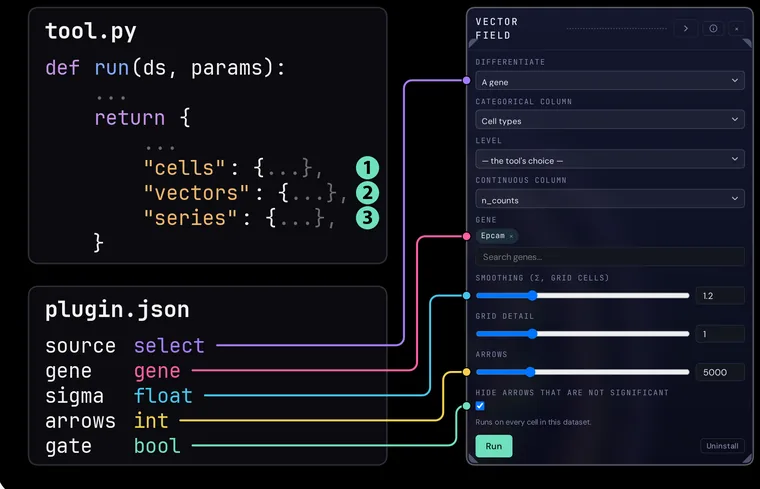

Build & publish a tool
A tool is a folder: a manifest, a Python or R file and the pixi environment it runs in. Write it with the SDK, check it with the gates and publish it by pull request to the public registry.
What a tool is
tool.py or tool.R defines run(ds, params); plugin.json declares its parameters, needs and outputs; pixi.toml and pixi.lock pin its environment.



The author’s loop
new validate pack pull request
The commands are the SDK’s: python -m pointillviz_tool. The gates run on your computer, again in the registry and once more on install.
-
Start from the scaffold
newwrites a starter tool in Python, or in R with--r, that passes every gate once its environment is locked. -
Write
run(ds, params)Read the dataset through
ds, and return the outputs the manifest declares. -
Declare the manifest
Each typed parameter becomes a control; requirements decide which datasets offer the tool, and
gpusays whether it can use a GPU. -
Lock the environment
pixi.tomllists what the tool needs, andpixi lockpins it for every platform inpixi.lock. -
Validate
validatebuilds the environment, runs the gates and names the one that failed.The gates
-
Pack
packwrites a.pvtoolbundle, to try in PointillViz with Install from file. -
Publish
Open a pull request that adds the tool’s folder to the public registry. The registry runs the gates in the tool’s own environment; once the request is merged, the tool is released and listed here.
The gates, again
-
Install
PointillViz builds the tool’s environment and runs the gates once more before it installs.
The gates, once more
The public registry
Every published tool is a folder there: its code, manifest, environment and README. Read a tool before you install it, or start yours from one.
The gates
What each gate checks, in the order they run. Every run uses the CPU, so a tool meant for a GPU must also run without one.
| # | Gate | What it checks |
|---|---|---|
| 1 | bundle | The bundle’s layout, size and file types. |
| 2 | manifest | Every field of plugin.json, defaults included. |
| 3 | environment | pixi.lock matches pixi.toml, which declares python, numpy and scipy, and for R also r-base and r-jsonlite. |
| 4 | entry | tool.py or tool.R loads in the tool’s environment and defines run(ds, params). |
| 5 | imports advisory | Reports network, subprocess, file-write, dynamic-code and environment use, with file and line. Advisory: it never blocks. |
| 6 | fixture | Runs on a synthetic dataset at its own defaults. |
| 7 | result | Returns the declared outputs and no others, each with values to draw. |
| 8 | edge | Runs with every parameter at its minimum, then at its maximum, without crashing. |
| 9 | no_mutation | Writes nothing into the dataset. |